Продукция РК им.Котовского
(Цены на продукцию действуют с 01 января 2018 года)
Горбуша
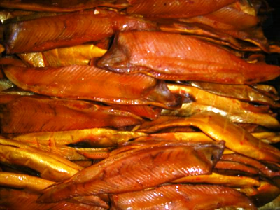
Горбуша (боковник) холодного копчения
Цена: 500 руб./кг.
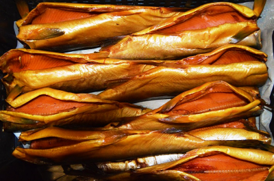
Горбуша без головы холодного копчения
Цена: 470 руб./кг.
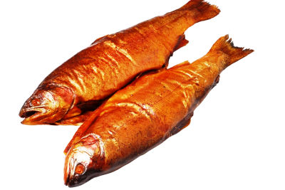
Горбуша с головой холодного копчения
Цена: 400 руб./кг.
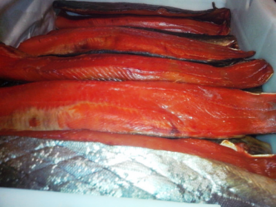
Горбуша (боковник) сушёно-вяленая
Цена: 590 руб./кг.
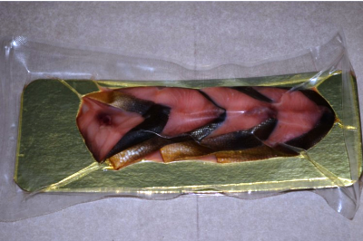
Горбуша (кусочки) холодного копчения
Цена: 550 руб./кг.
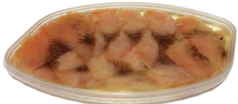
Горбуша (филе ломтики) в масле
Цена: 730 руб./кг.
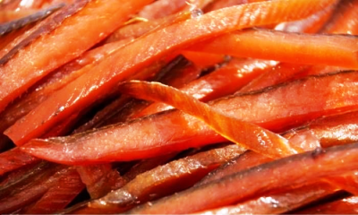
Горбуша (соломка) сушёно-вяленая
Цена: 900 руб./кг.
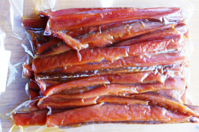
Горбуша (ломтики) холодного копчения
Нет в наличии
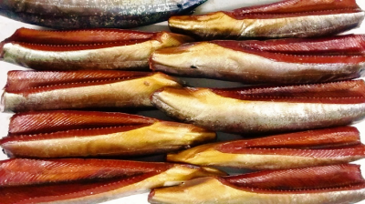
Горбуша (балык) холодного копчения
Нет в наличии
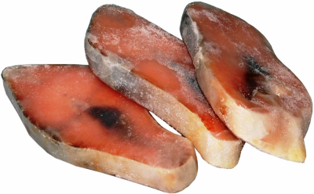
Горбуша (стейк) мороженый
Цена: 210 руб./кг.
Горбуша: описание, свойства
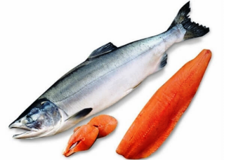
Горбуша – рыба семейства лососёвых, которая, в отличии от других рыб, имеет еще один плавник, расположенный между плавником на спине и хвостом. Среди прочих особенностей горбуши - крупные черные пятнышки на спинке, а также спинной горб. Отсюда и такое название этой рыбы.
Виды горбуши
Тело горбуши покрыто мелкой чешуёй и окрашено в серебристый цвет, на хвостовом плавнике расположено множество мелких темных пятнышек. Такая окраска характерна для рыб, обитающих в море.
В реке цвет рыбы меняется. На спине, боках и голове появляются темные пятна, в период нереста все тело приобретает коричневатый цвет, кроме брюха, которое остается белым, а плавники и голова остаются черного цвета.
Внешний вид самцов сильно меняется. На спине вырастает большой горб, челюсти удлиняются и искривляются, на них появляются мощные зубы. Когда-то стройная и красивая рыба приобретает уродливый вид.
Горбуша относится к мелким лососям. Размер её невелик. Всего лишь 68 см в длину, но небольшая величина компенсируются большой численностью особей.
Морская горбуша.
Ареал обитания довольно обширный.
В Северной Америке горбуша входит во все реки, от юга до севера. По азиатскому берегу Тихого океана горбуша находит нерестилища в реках, несущих свои воды в Охотское и Беринговое моря. Есть этот вид рыбы и на Курильских и Командорских островах, Сахалине, Хоккайдо и северной части острова Хондо. На юге горбуша доходит до залива Петра Великого. На нерест вверх по течению рек стаи рыб поднимаются не очень высоко. В Амур горбуша заходит массово в июне и поднимается вверх до реки Уссури.
Речная горбуша.
Для нереста горбуша выбирает места с более быстрым течением и дном, покрытым крупной галькой. Икра у рыбы крупная, составляет 5,5 — 8 мм в диаметре, но окрашена бледно и с оболочкой более прочной, чем у икринок кеты. Родители, отложив икру, погибают, а через 2—3 месяца из икринок выходят мальки, до весны, остающиеся в реке. Достигнув 3 — 3,5 см длины, весной молодь скатываются в море.
Питание горбуши
В море горбуша активно выбирает более калорийную пищу, чем кета. Пищевой рацион горбуши состоит из мелкой рыбы, ракообразных (50%) и мальков (30%). Горбуша растет и созревает удивительно быстро: после ската в море она уже возвращается в реки через 18 месяцев, чтобы приступить к нересту, отложить икру и погибнуть. Есть данные, что большинство особей вида горбуши достигает половой зрелости на третьем или четвертом году жизни. Однако эти сведения противоречивы. Как показывают морские уловы, в августе в море остаются лишь единичные особи, по каким-то причинам запоздавшие в развитии.
Горбуша и сима — самые теплолюбивые в своём виде. Зимуют рыбы в тех районах океана, где температура на поверхности воды ниже 5° С никогда не опускается. Благоприятный температурный режим также способствует быстрому росту рыбы. Численность горбуши, как правило, периодически колеблется. Установлено, что в реках Приморья ход рыбы в четные годы незначителен, а в нечетные годы горбуша идет в большем количестве. В реке Амур и на западном берегу Камчатки наоборот — самый большой улов горбуши ведется в четные годы.
Пищевая ценность и состав мяса горбуши
В горбуше есть почти все витамины и нужные человеку макро- микроэлементы. В продукте большое количество никотиновой кислоты, которая позитивно влияет на систему ЖКТ и ЦНС. В мясе это рыбе также присутствуют витамин В12, натрий, кальций, фтор, сера, фосфор, йод, ПНЖК омега-3.
Для поддержания в организме правильного баланса нужных целебных элементов и для профилактических мер патологий сосудов и сердца врачи советуют систематически потреблять в пищу рыбное мясо. Продукт, включает в состав большое количество белков.
Калорийность
Калорийность сырого рыбного мяса горбуши – 116 килокалорий на 100 грамм. В отваренном мясе примерно 168 килокалорий. А в 100 граммах обжаренного мяса примерно 281 килокалория. Калорийность тушек, приготовленных в духовке – 184 килокалории. Чрезмерное потребление продукта может спровоцировать набор веса.
Полезные свойства горбуши
Мясо горбуши при систематическом потреблении в пищу помогает восполнить дефицит многих элементов и витаминов в организме. Благодаря присутствию в организме элемента Омега-3, люди, часто потребляющие рыбное мясо в пищу, менее подвержены возрастным изменениям организма. Омега-3 позитивно влияет на структуру и активность клеток и тканей человеческого тела. Витамин PP достаточно сложно обнаружить в другой пище, это элемент, который нужен для головного мозга, для желудка и кишечника. Натрий позитивно влияет на кровеносную систему и водно-солевой обмен, а без фософра не может правильно протекать процесс кроветворения и костный обмен. Поэтому рыбное мясо надо включить в меню каждому человеку, который заботится о своем здоровье. Доказано, что Омега-3 жирные кислоты помогают человеку справляться со стрессами и успокаивают. Систематическое употребление мяса горбуши помогает в борьбе с болезнями сосудов и сердца, нормализует артериальное давление и выступают в качестве профилактики инфарктов и инсультов.
Как правильно выбрать горбушу
При выборе горбуши рекомендуется обращать внимание на некоторые особенности. Брюшко у качественной горбуши однородного окраса, без вздутых участков и достаточно плоское (если в брюхе икра, то оно может быть вздутым). Если рыба выпотрошена, то необходимо посмотреть окрас цвет внутри брюшка (оттенок должен быть нежно-розоватым). Жабры у тушки не должны быть ярко-красные. Чешуя у свежей тушки ровная и блестит. Рыбная кожа должна быть без деформаций, а рыбное филе - розовым. При надавливании, тело не должно продавливаться, не должно быть рыхлым. Розоватый оттенок брюшка сообщает о присутствии икры. Рыбный аромат не должен содержать запаха аммиака. Рыбная кожа должна прилегать к мякоти. Если горбуша покупается в упаковке, то отдельно надо посмотреть срок годности. Замороженная горбуша также должна быть однородного окраса, глаза ее должны быть яркими. Горбуша является ценным деликатесным продуктом, поэтому кушать ее можно и взрослым, и детям. Единственное предостережение — это возможное проявление аллергической реакции и индивидуальная непереносимость рыбной продукции.
Вернуться в каталог продукции